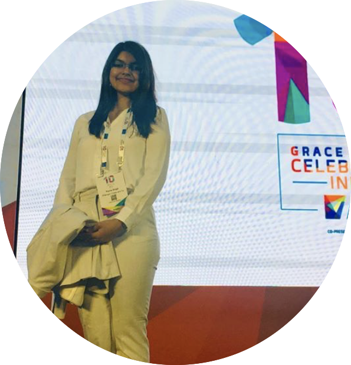
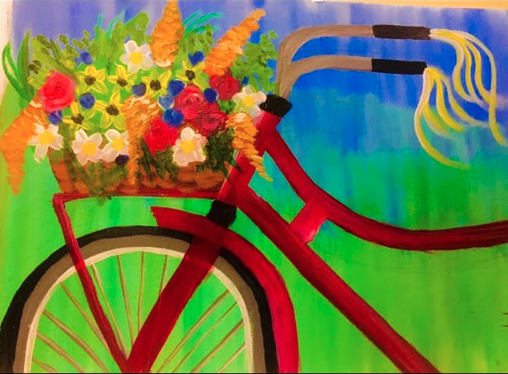
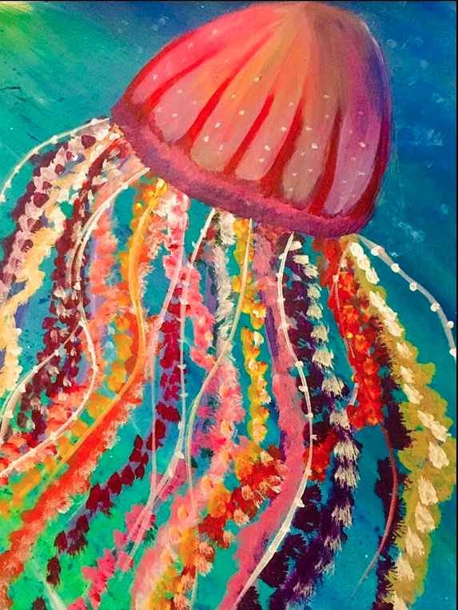

Purva Singh
Software Developer, (JP Morgan)
Speaker at Grace Hopper Conference, India, 2019
B.Tech Computer Science and Engineering
Projects
- StockGram : Intelligent Portfolio Manager
PyTorch, Python, sentiment analysis, alphalens, factor return analysis
- AI-based portfolio manager that leverages tone of financial 10-K statements as an alpha factor. - StockGram : Natural Language Generation Model for Finance
PyTorch, Python, Bi-LSTMs, GloVe embeddings
- Deep learning model for digitizing financial communications via NLG - Covhindia
PyTorch, BERT
- Deep learning model for sentiment polarity detection of COVID-19 tweets in Hindi. - Credit Card Fraud Detector
PyTorch, Deep Q-Networks
- Deep reinforcement learning model for credit-card fraud detection.
Certificates
- Kaggle Notebooks
PyTorch, NLP, NLG
- My Jupyter notebooks on various AI use-cases open-sourced on Kaggle. - AI for Trading Nanodegree by Udacity
PyTorch, Alphalens, Zipline
- Worked on quantitative trading, alpha research, NLP analysis with deep learning, trading signals and backtesting. - Natural Language Processing Nanodegree by Udacity
PyTorch, NLP
- Worked on Naive Bayes Spam Classifier, POS tagging, feature extraction and embeddings, topic modelling, sentiment analysis, NMT and speech recognition. - Deep Learning Nanodegree by Udacity
PyTorch
- Worked on PyTorch, CNNs, RNNs, GANs and deploying AI models to production via Amazon Sagemaker.
Publications
@inproceedings{purva_deep_reinforcement_cc_fraud,
title={Deep Reinforcement Learning for Credit Card Fraud Detection},
author={P. Singh and Dr. D. P. Acharjya},
booktitle={Neural Computing and Applications (In Review)},
year={2020}
}
@inproceedings{purva_10k,
title={Intelligent Portfolio Management via NLP Analysis of Financial 10-K Statements},
author={P. Singh},
year={2020},
booktitle={International Journal of Artificial Intelligence and Applications (IJAIA)}
},
@inproceedings{purva_covhindia,
title={Covhindia: Deep Learning Model for Sentiment Polarity Detection of COVID-19 Tweets in Hindi},
author={P. Singh},
booktitle={International Journal of Natural Language Computation (IJNLC)},
pages={23--34},
year={2020},
booktitle={International Journal of Natural Language Computation (IJNLC)}
}
@inproceedings{purva_stockgram,
title={StockGram: Deep Learning Model for Digitizing Financial Communications via Natural Language Generation},
author={P. Singh},
booktitle={International Journal of Natural Language Computation (IJNLC)},
pages={1--10},
year={2020}
}
@inproceedings{purva_big_data,
title={Compilers used in the Stratosphere Platform for Big Data Analytics},
author={C Bagchi and K Chopra and P Singh and Dr. R. Babu},
booktitle={International Journal of Engineering Research and Technology (IJERT)},
pages={454--462},
year={2020}
}
@inproceedings{purva_ghci,
title={Ethical Hacking and Penetration Testing (Workshop)},
author={P. Singh},
booktitle={Grace Hopper Conference, India, 2019},
pages={90 mins},
year={2019}
}
@inproceedings{purva_fuzzy,
title={Survey on MR image segmentation using fuzzy C-Means algorithm},
author={P Singh and K Arora and S Sinha and R. Sathyaraj},
booktitle={International Journal of Engineering Research},
pages={1--10},
year={2017}
}
Tech for Social Good
- Rural Caravan, India, Technology Expert, 2019-20
-Served as a technology expert as a part of Force-for-good (FFG) hackathon held at JP Morgan. Build a word-press website from scratch for the NGO's admin and deployed the same to their production server. - EnAble India, Software Developer, 2018-19
- As a software developer for the NGO, I worked on enhancing their android application, EnCare India, with multiple features such as multi-language support. Done as a part of 8-month long FFG hackathon. - Amogh Pragati, India, Software Developer, 2017
- As a part of Code-For-Good (CFG-2017) hackathon conducted by JPMC, I worked on creating a website that taught the basics of computer to differently-abled children. Also worked on speech-to-text conversion for children diagnosed with cerebral palsy. - Akshaya Patra, India, Volunteer, 2016
- I volunteered at the Akshaya Patra Foundation, Bhilai and worked in their production, logistics and quality department.
Paintings
In my free-time, I like to paint. I get inspired by a lot of stuff around me and try to mirror them in my paintings!!


Trajectory
-
Software Developer
JP Morgan Chase & Co.
July 2018 - present
-
Software Developer Intern
JP Morgan Chase & Co.
Jan 2018 - Jun 2018
-
B.Tech Computer Science and Engineering
VIT University, Vellore
2014 - 2018
8.55/10 GPA
-
High School
Delhi Public School, Bhilai
2000 - 2013
93.2% in 12th Board examinations.